雪丸、水をもとめて。
むかしむかし、山や川、月や森を守る神さまたちがいました。
あるとき神さまたちは、昔の記憶を失い、うさぎやたぬきの姿に。
山の水が細りはじめたある朝、白うさぎの雪丸は、水をもとめて旅に出ます。
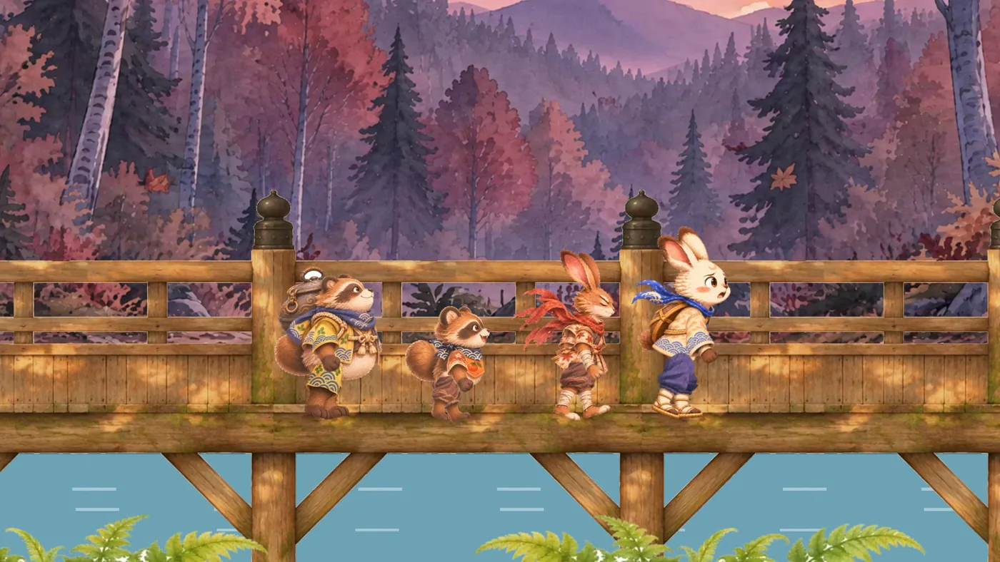
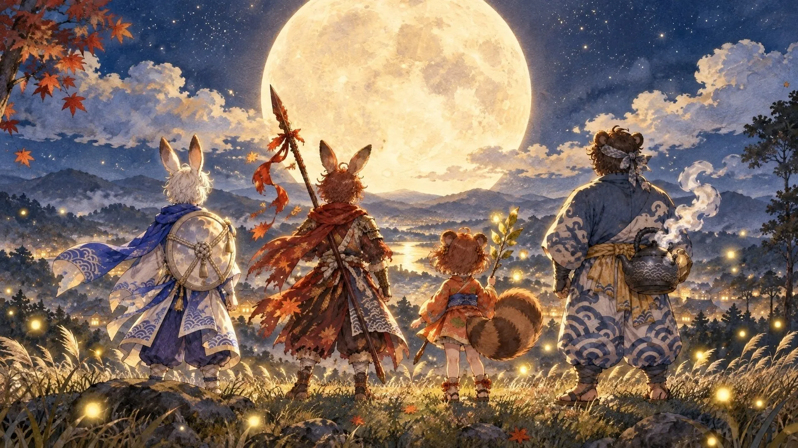
むかしむかし、山や川、月や森を守る神さまたちがいました。
あるとき神さまたちは、昔の記憶を失い、うさぎやたぬきの姿に。
山の水が細りはじめたある朝、白うさぎの雪丸は、水をもとめて旅に出ます。

うさぎたちは自動で進み、自動で戦います。あなたがするのは、ここぞの「踏ん張り」と、仲間を育てること。画面はすべて、実際のゲーム画面です。
うさぎたちは自動で道を進み、敵に出会うとその場で合戦。勝てばそのまま先へ。戦った相手が心をひらいて、旅の仲間になることも。
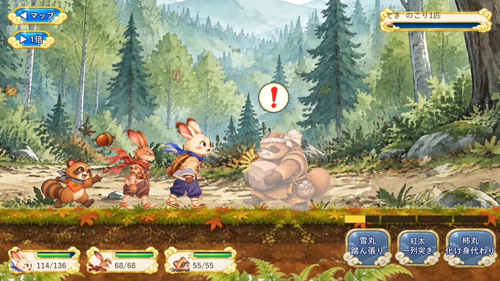
敵の大きな一撃の前では、雪丸が足を踏ん張って盾を構えます。タイミングよくボタンを押せば、完璧に受け止めて、はね返せます。
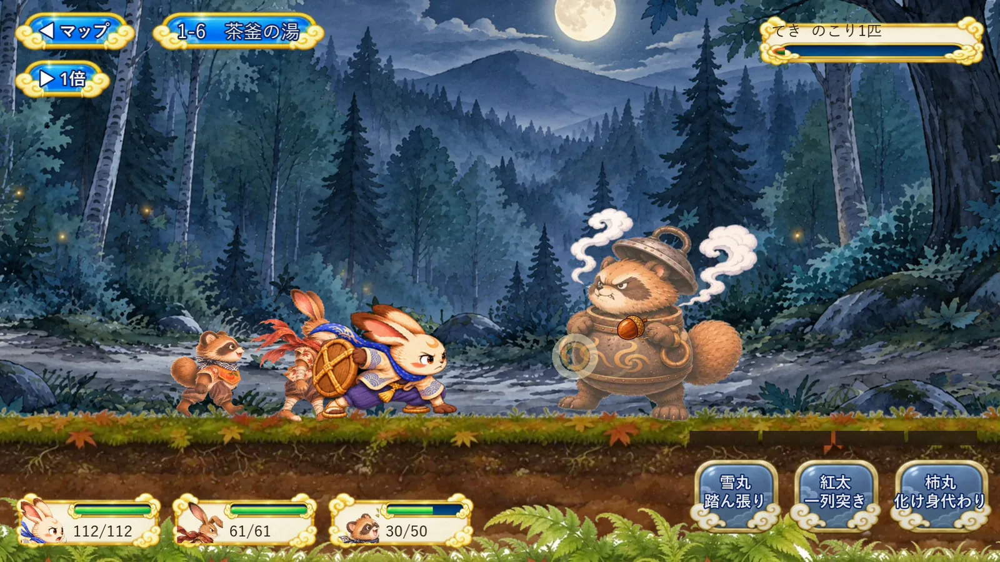
戦いで集めた素材で、育成の絵巻のマスをひとつずつ埋めていきます。体力や攻撃が少しずつ上がり、やがて新しい技も。

負けても、コインと育成はそのまま持ち越し。育てた同じ仲間で、前に負けた場所へ。昨日越えられなかった道を、今日は越えていきます。
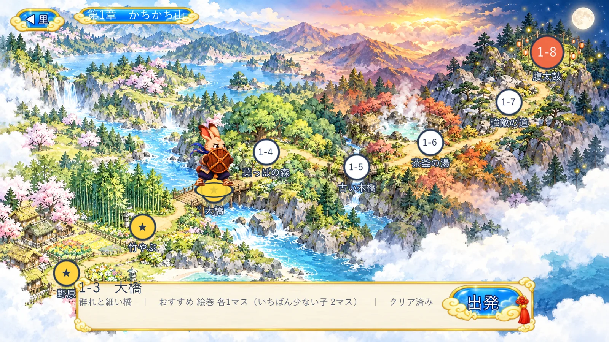
開発中の画面です。画像を選ぶと拡大できます。
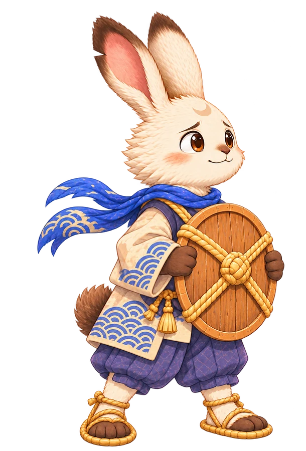
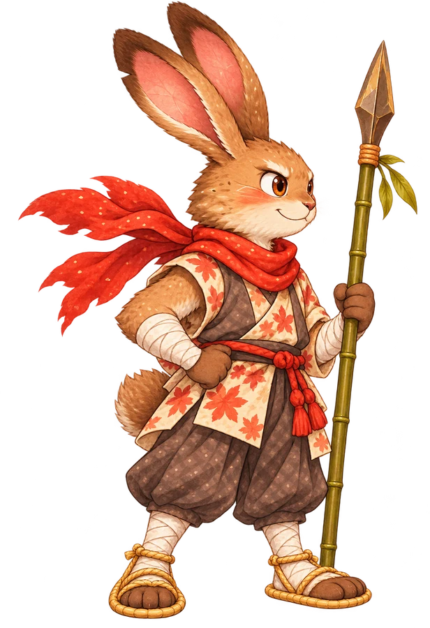
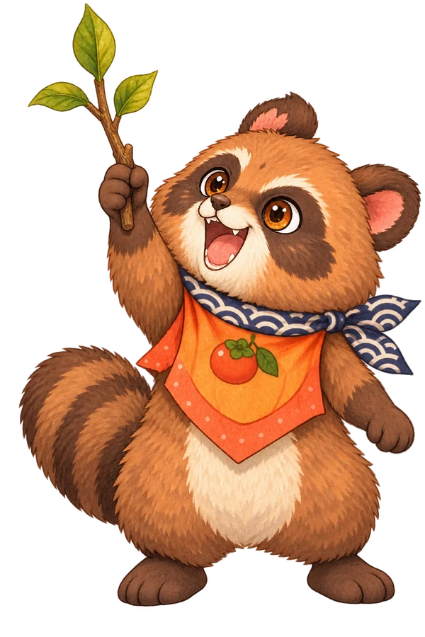
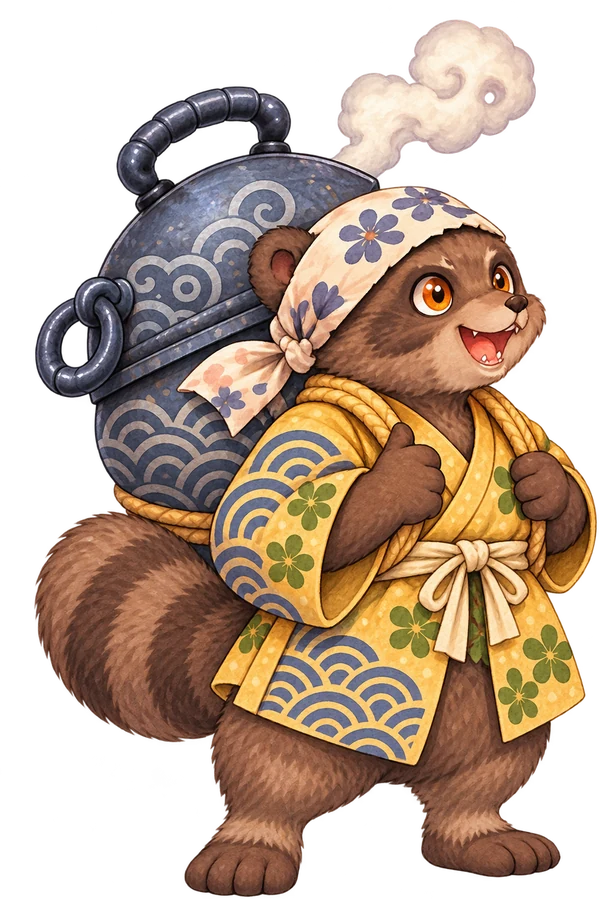
仲間たちは、動物の姿になった神さまたち。月夜には、こんなふうに遊んでいました。
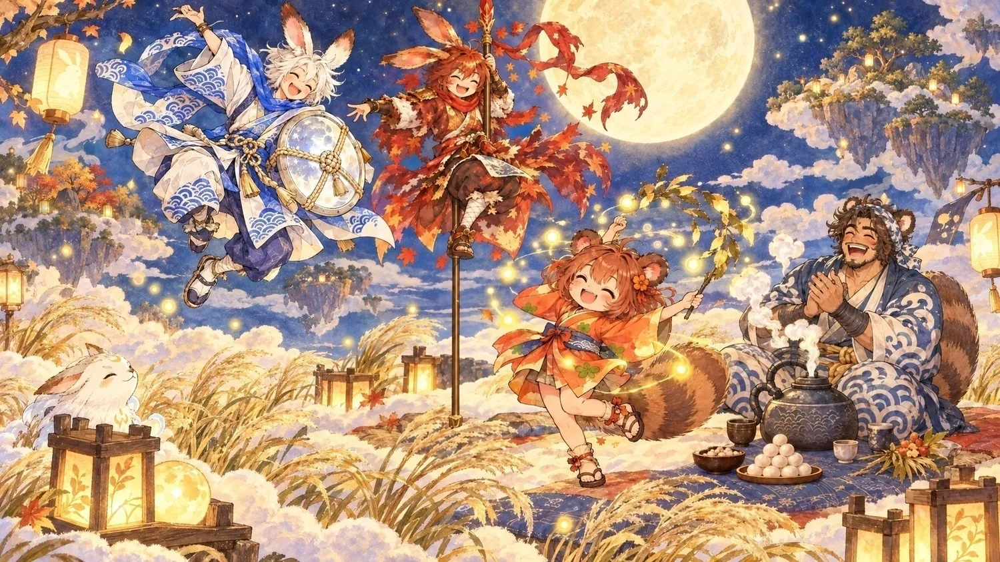
奥義を決める一瞬だけ、本来の神さまの姿がよみがえります。
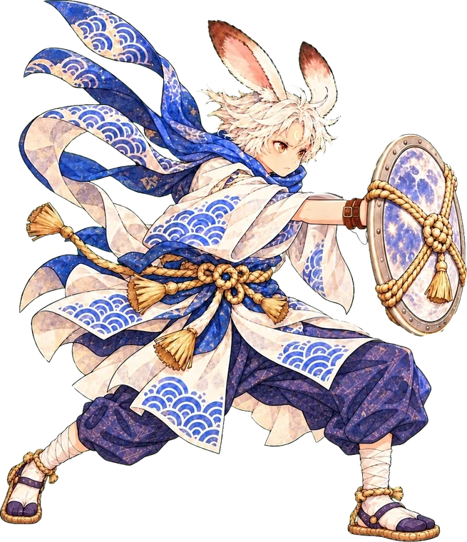
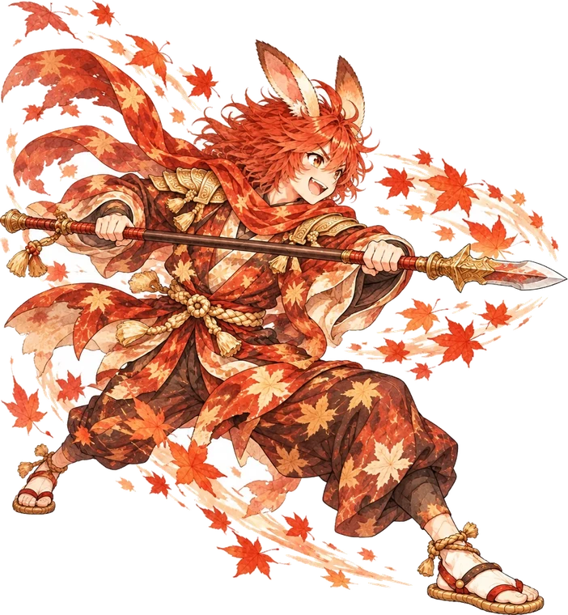
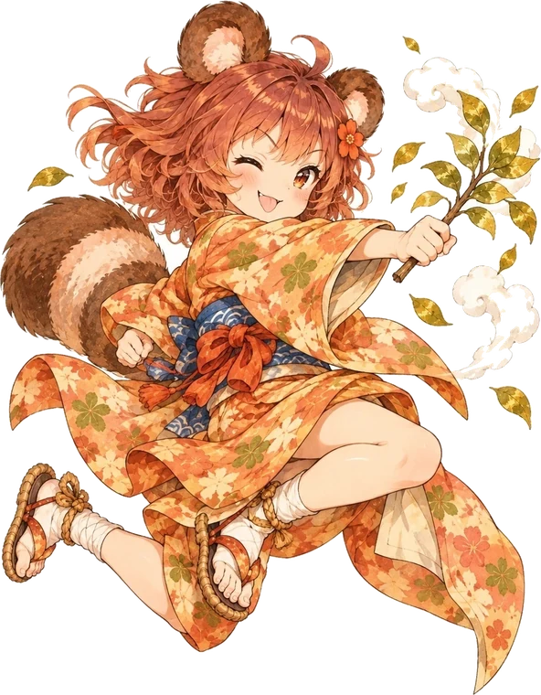
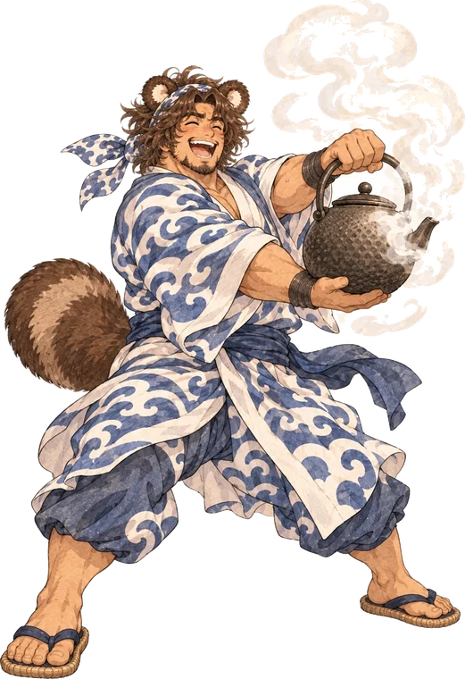
24秒の戦闘ショートから、じっくり見られるPVまで。
『うさたぬ合戦』はAVY PROJECTが個人で開発中です。
Android版クローズドベータの予定は、公式の発信をご確認ください。